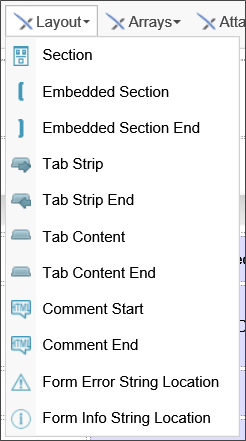
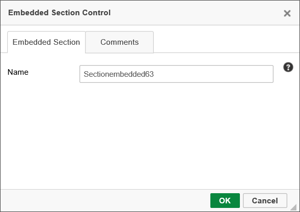
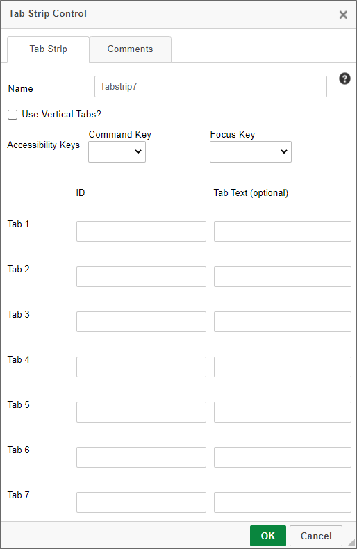
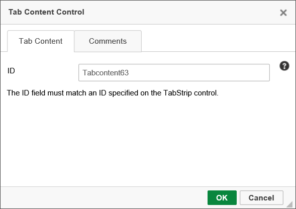
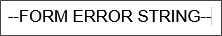
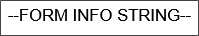

There are two kinds of section controls: the Section and Embedded Section. Both section types are used to gather various controls on a Form into one group, making it easier to set properties common throughout the group. The Section is visible to the user, and is collapsible and expandable. The Embedded Section is not visible to the user.
All section controls automatically include HTML anchors using the syntax:
<a name="SectionName"></a>
The anchor has the same name as that of the Section control. Form designers can give their users the ability to scroll down to any section by providing a link (using the Hotlink control) with the URL:
#SectionName
Simply replace "SectionName" with the actual name of the Section control. You may find the ability to link to document sections useful when designing long forms.
 Section
SectionSee the Section control's documentation in the Basic Controls topic for detailed information about this control.
Embedded Sections are represented in the Online Form Designer as large square brackets, though they’re invisible to the Form’s end user at run-time.

Every Embedded Section must have an Embedded Section End control. Every control that is placed between the section and section end controls will automatically be part of the embedded section.
Embedded sections are useful for conditionally showing and hiding items on a Form. For instance, you can use embedded sections to surround a table row you would like to hide, and set the conditions under which it should be hidden by configuring the Form properties on Process Director. The Name property is the only configurable property for the embedded section.

When using an embedded section in a table, you should place the Embedded Section control at the end of the row before the row that you want to hide, and place the Embedded Section End control at the end of the row you want to hide.

Save the Form template then navigate to the Form Controls tab of the Form definition. Find the Embedded Section surrounding the row that you want to hide, and click on the Edit link. In the Set Visibility Options dropdown, select either “Field is Hidden When” or “Field is Visible When”, and use the Condition Builder by clicking the Click to Create Condition link to set the conditions under which the row will be hidden.
For Process Director v5.26 and higher, embedded sections will be specifically identified as such on the Form Controls tab of the Form Definition.
 A display issue may occur for TabStrip controls placed inside a table. To resolve this issue, add the following CSS style to the Style property of the table:
A display issue may occur for TabStrip controls placed inside a table. To resolve this issue, add the following CSS style to the Style property of the table:table-layout: fixed;
This control enables you to separate form content into different tabs, thus conserving page space. Each tab can be viewed individually. To declare the start of a tab strip, use the Tab Strip control.

The Properties dialog box enables you to configure the number, text, and IDs of tabs. By default, tabs are arrayed horizontally on the page. You can, however, arrange the tabs vertically by checking the Use Vertical Tabs property.

The ID property for each tab is the name Process Director will use for the tab to identify it. The Tab Text is the text that the user will see on each tab at run-time.
For Process Director v5.43 and higher, two new accessibility-related properties were added to the TabStrip control, CommandKey and FocusKey. These properties consist of dropdown controls that enable you to choose a set of command keys and/or regular keyboard keys to send the focus to the TabStrip control when the configured keys are pressed. These properties were added to satisfy the optional AccessKeys feature of accessibility. Keep in mind that each control needs to have a unique AccessKey, and applying the same configuration to two different controls on the same page may prevent the feature from working as expected. Also, different operating systems and browsers will implement the use of AccessKeys differently. Similarly, screen reader implementation of AccessKeys will depend largely upon the browser being used, and screen readers additionally have a larger set of available AccessKeys that may override the ones configured on the Form.
Everything inside the Tab Strip control must be part of a tab. To declare the start of a tab, use the Tab Content control.

Form content goes between the Tab Content and Tab Content End controls. These two controls define the start and end of a tab.

The ID you configure for each tab on the Tab Strip control, configured in the properties, must match the ID property of the tabs defined in the Tab Content control's properties.
 IDs are case sensitive, so the case must match between the IDs in the TabStrip and TabStripContent controls.
IDs are case sensitive, so the case must match between the IDs in the TabStrip and TabStripContent controls.

TabStrip and TabStrip Content controls are both ended with an "End" control, just as sections are.
If a TabStrip's first tab is hidden, the Form will select the first visible tab by default.
You can set the focus to a specific tab in the TabStrip control by setting the value of the TabStrip to the ID of the tab you want to display.
For Process Director v4.5 and higher, Tab controls can be directly disabled in the Form definition, if the DisabledTabsDisabled custom variable is set to True.
The Comment Start and Comment End controls are used to define an area in the Form to contain a comment. A commented area will only display when building the Form in Online Form Designer. Any controls or text put inside the commented area will not affect or be displayed in the Form once it is deployed.

The primary use for these controls is to provide comments for other designers.
This Form control is used to identify the area(s) where error messages are displayed on the Form. If this control is not present on a Form, then the error messages are placed at the top and bottom of the form. The placeholder looks like this:

The only configurable property for this control is the Name.
This Form control is used to identify the area(s) where informational messages are displayed on the Form. If this control is not present on a Form, then the informational messages are placed at the top and bottom of the form. The placeholder looks like this:

The only configurable property for this control is the Name.
You can view the documentation for all tools available in the Online Form Designer by using the Table of Contents on the upper right corner of the page, or by clicking one of the links below.